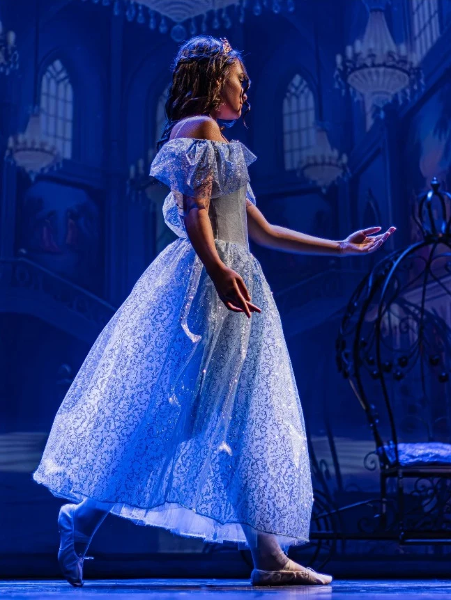
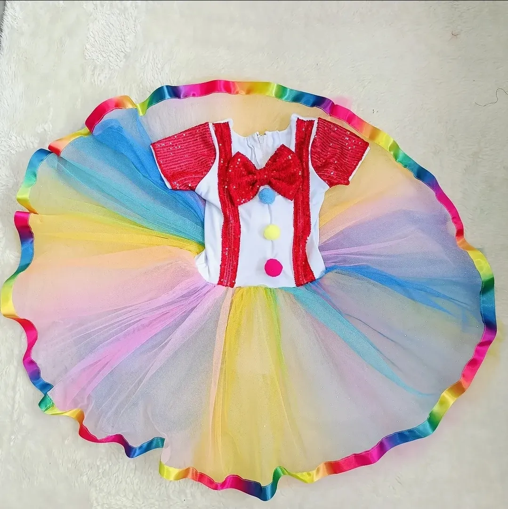
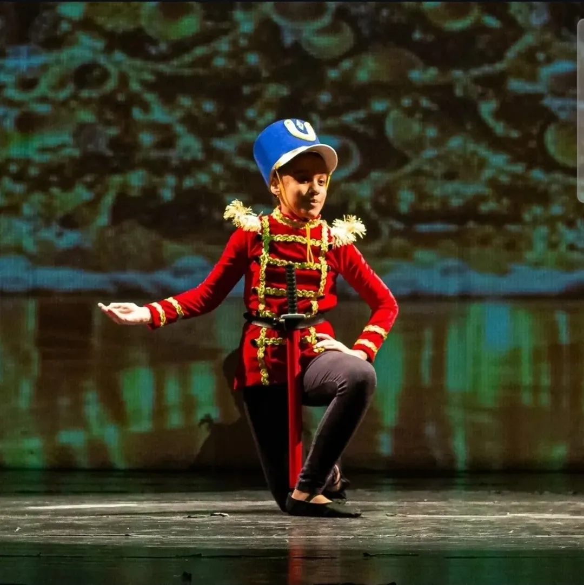
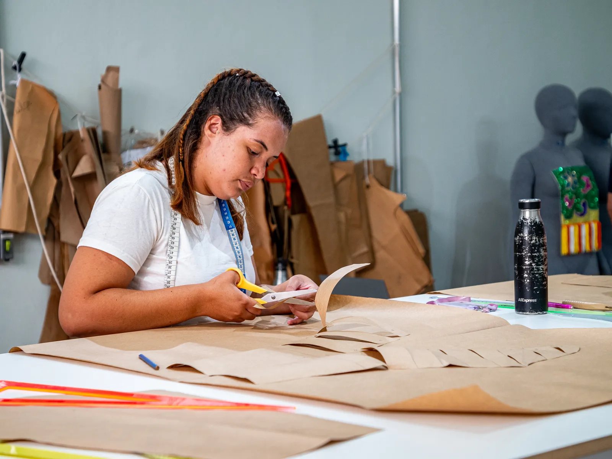
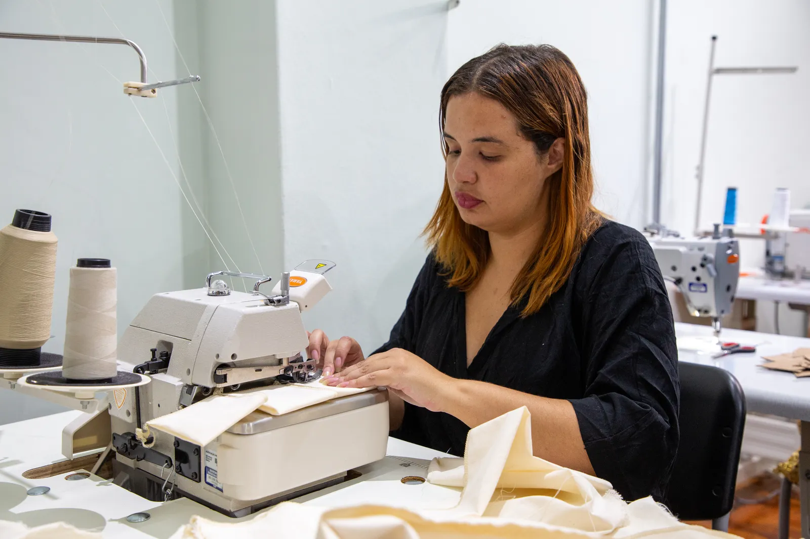

Costura sob medida em Itaquaquecetuba
Figurinos de dança, vestidos de festa, fantasias e ajustes. Você traz a ideia ou a peça, e o ateliê cuida do caimento.
Rua Catanduvas, 136, Jardim Nascente. Atendimento de segunda a sexta, das 9h às 18h, e sábado, das 9h às 13h.

Peças que saíram do ateliê


Tem uma peça em mente? Envie uma foto ou um desenho de referência, e definiremos juntos o tecido, as medidas e o prazo.
Enviar minha ideiaO que o ateliê faz
Do conserto rápido à peça feita do zero. Escolha o que mais se parece com o seu caso e peça o orçamento já com a mensagem pronta.
-
Pedir orçamento de costura sob medida
Costura sob medida
Roupas feitas do zero para o seu corpo, de vestidos a peças de alfaiataria.
-
Pedir orçamento de figurino de dança
Figurinos de dança
Ballet, jazz e apresentações de escola, com acabamento que aguenta o palco.
-
Pedir orçamento de vestido de festa
Vestidos de festa
Formaturas, casamentos e eventos, feitos ou ajustados para cair bem em você.
-
Pedir orçamento de fantasia
Fantasias
Infantis e adultas, para festas, escola e teatro.
-
Pedir orçamento de ajuste ou reforma
Ajustes e reformas
Barra, cintura, zíper, manga. Aquela peça querida que deixou de servir volta a vestir bem.
Como funciona
-
Você conta o que precisa
Mande uma foto da peça ou da ideia pelo WhatsApp.
-
Medidas e orçamento
Combinamos medidas, tecido e valor antes de começar.
-
Prova
Com a peça no corpo, ajustamos o caimento até ficar certo.
-
Retirada
Você busca no ateliê na data combinada.


Mais de 10 anos de costura
O Ateliê Ventique nasceu do gosto pela costura e da vontade de atender cada pessoa com calma. Cada peça é cortada, montada e provada aqui, no ateliê.
O que o ateliê promete é simples: acabamento caprichado, prazo combinado e respeito pela roupa que você já tem. Antes de comprar uma peça nova, vale ver se uma reforma resolve.
Como tirar suas medidas
Com as medidas em mãos, o orçamento sai mais rápido. Use uma fita métrica de costura, peça ajuda a alguém e meça sobre roupa justa. Em caso de dúvida, mande uma foto pelo WhatsApp.
Enviar minhas medidasBusto
Passe a fita ao redor da parte mais cheia do busto, por cima das costas. Mantenha a fita reta e paralela ao chão, sem apertar.
Cintura
Meça na parte mais fina do tronco, normalmente um pouco acima do umbigo. Respire normalmente e não encolha a barriga.
Quadril
Passe a fita ao redor da parte mais larga do quadril, sobre o bumbum, mantendo-a nivelada.
Ombro a ombro
Nas costas, meça de uma ponta do ombro até a outra, onde a costura da manga ficaria.
Comprimento da peça
Do ponto mais alto do ombro até onde a peça deve terminar. Para saias, meça da cintura até a barra.
Manga
Do ombro até o punho, com o braço levemente dobrado.
Fim de ano chegando
Recitais, formaturas e festas costumam encher a agenda. Se você precisa de figurino, vestido ou ajuste, chame com antecedência.
Venha ao ateliê
Agende um horário para as marcações e provas. O atendimento é feito com hora marcada.
- Endereço
- Rua Catanduvas, 136, Jardim Nascente
Itaquaquecetuba, SP, CEP 08588-170
Como chegar - (11) 96358-7995
- Horário
- Segunda a sexta, das 9h às 18h
Sábado, das 9h às 13h - @atelieventique